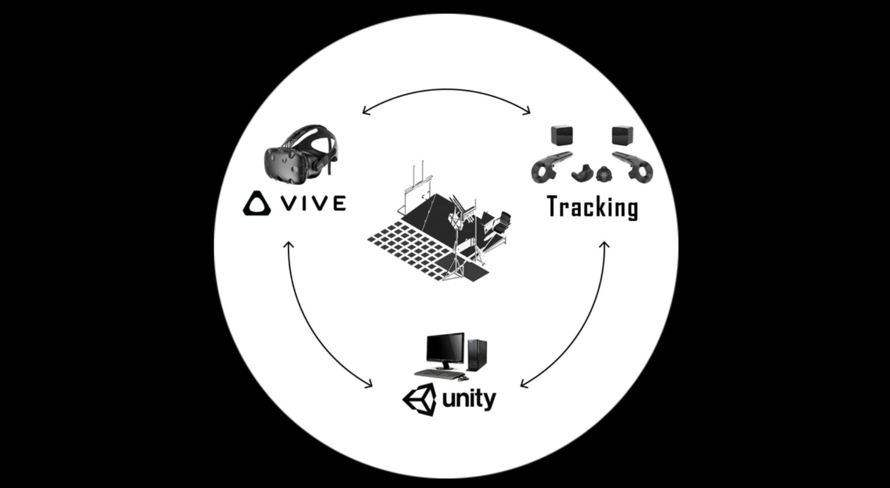
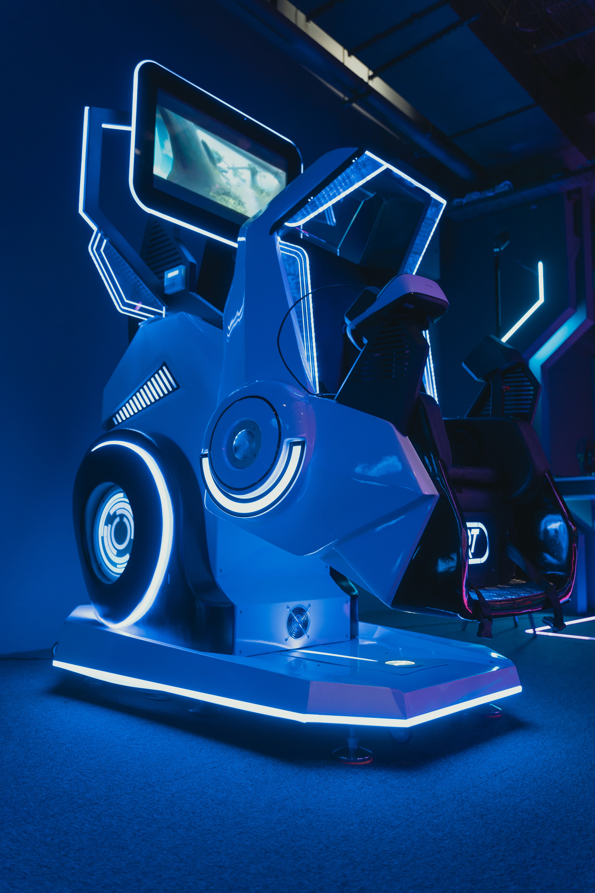

Virtual Reality (VR) technology utilises visual and auditory senses to allow users to experience and create
immersive and dynamic virtual environments. However this space lacks the sense of touch, isolating the user to a completely computer
generated reality. In contrast, although architecture has rarely been dynamic or interactive, buildings use tactile materials to augment
the spatial experience within these spaces. 'Tactile VR' is a project that combines these two realities together to explore the concept of
tangible data. Through the installation users can engage with a new type of architectural space, where the tactility of physical architecture
is merged with dynamic digital spatial configuration.

Natural exploration of textures involves active sensing, i.e., voluntary movements of tactile sensors (e.g., human fingertips or rodent whiskers)
across a target surface. Somatosensory input during moving tactile sensors varies according to both the movement and the surface texture. Combining
motor and sensory information, the brain is capable of extracting textural features of the explored surface. Despite the ecological relevance of
active sensing, psychophysical studies on active touch are largely missing. One reason for the lack of informative studies investigating active
touch is the considerable challenge of assembling an appropriate experimental setup. A possible solution might be in the realm of virtual tactile
reality that provides tactile finger stimulation depending on the position of the hand and the simulated texture of a target surface. In addition
to rigorous behavioral studies, the investigation of the neuronal mechanisms of active tactile sensing in humans is highly warranted, requiring
neurophysiological experiments using electroencephalography (EEG), magnetoencephalography (MEG) and/or functional magnetic resonance imaging (fMRI).
However, current neuroimaging techniques impose specific requirements on the tactile stimulus delivery equipment in terms of compatibility with the
neurophysiological methods being used. Here, we present a user-friendly, MEG compatible, tactile virtual reality simulator. The simulator consists of
a piezo-electric tactile stimulator capable of independently protruding 16 plastic pistons of 1 mm diameter arranged in a 4 × 4 matrix. The stimulator
delivers a spatial pattern of tactile stimuli to the tip of a finger depending on the position of the finger moving across a 2-dimensional plane.
In order to demonstrate the functionality of the tactile virtual reality, we determined participants’ detection thresholds in active and passive
touch conditions. Thresholds in both conditions were higher than reported in the literature. It could well be that the processing of the piston-related
stimulation was masked by the sensory input generated by placing the finger on the scanning probe. More so, the thresholds for both the active and passive
tasks did not differ significantly. In further studies, the noise introduced by the stimulator in neuromagnetic recordings was quantified and somatosensory
evoked fields for active and passive touch were recorded. Due to the compatibility of the stimulator with neuroimaging techniques such as MEG, and based on
the feasibility to record somatosensory-related neuromagnetic brain activity the apparatus has immense potential for the exploration of the neural underpinnings
of active tactile perception.
Tactile texture perception is typically an active process; i.e., animals voluntarily move specific body parts (e.g., fingertip in humans or whiskers in rodents)
across a surface to generate dynamically changing tactile stimuli. In other words, active tactile sensing is a confluence of two processes: (a) precisely controlled
movements of the sensory surface; and (b) the perception of the emergent tactile stimuli. Despite the ecological relevance of the active component of tactile sensing,
in research and in clinical tests predominantly passive sensing is assessed during which tactile stimuli are delivered to a stationary finger. Whereas passive touch
experiments are relatively easier to implement, and high-precision controlled stimulation is possible, recent studies in humans suggest an intricate link between
motor processing and the somatosensory system (Limanowski et al., 2019). For example, Simões-Franklin et al. (2011) showed in an functional magnetic resonance imaging
(fMRI) study investigating the exploration of sandpaper textures that the active compared to passive condition elicited stronger activations of the primary
somatosensory region. Therefore, passive touch studies alone might fail to fully capture the role of the somatosensory system. One of the reasons for fewer studies
in active tactile sensation could be the technical challenge of delivering well-controlled stimuli while the participant’s finger is moving. Previous commendable
approaches to study active tactile sensation used equipment that was mostly restricted to those studies alone (Phillips et al., 1990; Vega-Bermudez et al., 1991;
Cascio and Sathian, 2001; Gamzu and Ahissar, 2001). Thus, there is a need for a versatile tool that could create a virtual tactile reality, which will eventually
provide the opportunity to present a variety of texture stimuli to the participant.

Whereas there are some human behavioral studies on active somatosensation, there are even fewer studies investigating the neuronal mechanisms of active tactile
perception in humans. Investigations using neuroimaging tools [e.g., by using magnetoencephalography (MEG) or fMRI] require equipment that is compatible with the
testing environment, and does not generate electrical noise that might corrupt or interfere with the recorded neurophysiological signals. In other words, there is
a need for a tool that goes beyond psychophysical experiments and overcomes the limitations of compatibility in neurophysiological and neuroimaging experiments.
To that end, we developed a tactile virtual reality setup compatible with MEG and that could be used for psychophysical experiments as well.
Typically, the manual presentation of different textures by the experimenter is slow and the possibility of unintended experimenter bias is high. Therefore,
an automated and bias-free presentation of stimulus surfaces for efficient estimation of vibrotactile thresholds is always preferable. The novel tactile virtual
reality setup presented here motivates two primary goals—(a) naturalistic finger sensing on textured surfaces (ecological validity); and (b) computer-controlled
equipment to present the textured target stimuli efficiently (without the requirement of manually exchanging different surface probes).
When we move our finger on textured surfaces, the interaction between the fingertip and the surface elicits vibrotactile stimulation (Hollins et al., 2002;
Bensmaia and Hollins, 2003), which allows us to infer the underlying texture. Here, we worked under the assumption that it should be possible to recreate
the textures virtually by presenting the corresponding vibrotactile stimulation pattern to the fingertips if different textures generate different kinds of
vibrotactile sensory input (Bensmaia and Hollins, 2003; Manfredi et al., 2014). Our tactile virtual reality setup presented here consists of three main components—a
resistive touchpad, a scanning probe (which the participant holds), and the control system. The scanning probe contains a 4 × 4 matrix of piezo-electrically driven
pistons covering a square skin area of 1 × 1 cm2 (Figure 1A). To explore a virtual surface, a user moves the scanning probe over the touchpad with the probing
fingertip placed over the piston matrix while the remaining fingers hold the body of the scanning probe. Depending on the position of the scanning probe on the
touchpad, pistons are activated to simulate a predefined surface (i.e., the stimulus delivery depends on the user’s choice of placing the scanning probe on the
touchpad). The piston matrix mimics locally the vibrotactile stimulation that is perceived while touching the surface of real objects. Moving the scanning probe thus
alters the tactile stimulation pattern. While fast movements of the probe translate into higher stimulation frequencies, slow movements result in lower frequencies.